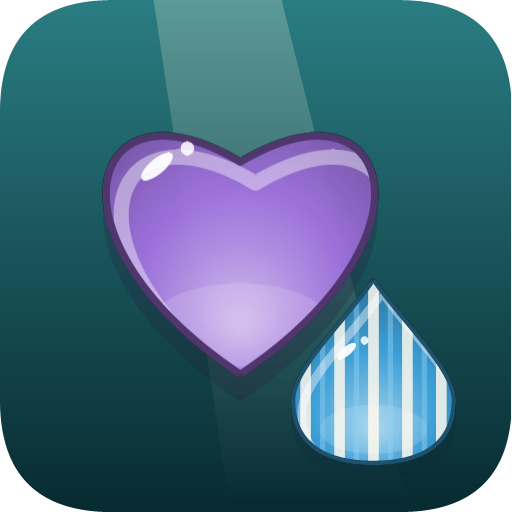

SugarfallPablov Software · Last updated / Última actualización: 2026-10-31
Privacy Policy
Sugarfall is a match-3 puzzle game for Windows. It runs entirely on your device. We do not collect, store, sell or share any personal information.
Data stored on your device
Your progress (levels, stars, coins, lives and boosters), your settings (sound, music and language) and the worlds you unlocked are saved in a file on your PC so they are there next time. This file never leaves your device. Uninstalling the game deletes it.
Purchases
The first world is free; the other worlds and the full game are in-app purchases processed by the Microsoft Store. The game only asks the Microsoft Store which worlds you own and their prices. We never see or receive your payment details or your Microsoft account. Microsoft's privacy statement applies to those transactions: privacy.microsoft.com.
Internet, analytics and ads
The game has no ads, no analytics, no tracking and no accounts. Apart from the Microsoft Store, it does not connect to the internet and does not send data to our servers (we do not have any).
Children
The game is suitable for all ages and collects no information from anyone, including children.
Contact
Questions? Write to pablovidelayanez@outlook.com. If this policy changes, we will update this page and its date.
Política de privacidad
Sugarfall es un juego de puzles de combinar tres para Windows. Funciona completamente en tu equipo. No recopilamos, guardamos, vendemos ni compartimos información personal.
Datos guardados en tu equipo
Tu progreso (niveles, estrellas, monedas, vidas y potenciadores), tu configuración (sonido, música e idioma) y los mundos que desbloqueaste se guardan en un archivo en tu PC para que sigan ahí la próxima vez. Ese archivo nunca sale de tu equipo. Al desinstalar el juego se borra.
Compras
El primer mundo es gratis; los demás mundos y el juego completo son compras dentro del juego que procesa la Microsoft Store. El juego solo le pregunta a la Microsoft Store qué mundos tienes y sus precios. Nosotros nunca vemos ni recibimos tus datos de pago ni tu cuenta de Microsoft. A esas transacciones se aplica la declaración de privacidad de Microsoft: privacy.microsoft.com.
Internet, estadísticas y publicidad
El juego no tiene publicidad, estadísticas, rastreo ni cuentas. Aparte de la Microsoft Store, no se conecta a internet ni envía datos a servidores nuestros (no tenemos).
Niños
El juego es apto para todas las edades y no recopila información de nadie, incluidos los niños.
Contacto
¿Dudas? Escribe a pablovidelayanez@outlook.com. Si esta política cambia, actualizaremos esta página y su fecha.